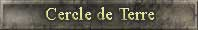
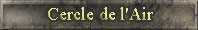
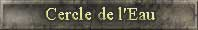
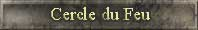
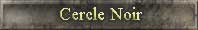
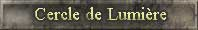
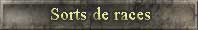
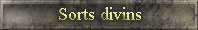
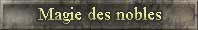

La magie est un art très difficile à maîtriser et peu de gens réussissent dans ce domaine. C'est pourquoi un mage doit se concentrer sur un domaine de magie. Les dieux ont mis à la disposition des mages quatre éléments : la terre, l'air, le feu et l'eau. Avec l'apparition du démon, un étrange cercle est apparu, celui de la magie noire. Et certains privilégiés peuvent opter pour le cercle de la lumière. Apprendre la magie est un mode de vie et lorsqu'on entre dans l'étude d'un cercle de magie, on y passe toute sa vie. C'est pourquoi un mage ne peut suivre la voie que d'un seul élément. Rares sont ceux qui sont arrivés à en contrôler plus d'un.
Chaque royaume possède un seul mage. Il devra choisir son élément et ensuite suivre cette voie. Le mage augmentera ses capacités en pratiquant la magie et chaque sort réussi lui apportera de l'expérience. Plus il aura d'expérience et meilleur il sera pour lancer des sorts et vous protéger des sorts ennemis. De plus, les sorts ne sont pas tous disponibles dès le début. Le mage devra atteindre un certain niveau d'expérience afin de pouvoir accéder au sort suivant.
Pour lancer un sort, le mage doit disposer de suffisamment de concentration afin de bien réussir et, de plus, il doit avoir suffisamment de puissance dans son anneau magique pour effectuer ce sort. Chaque point de puissance donne la chance de lancer un sort. Une fois l'anneau vidé de sa puissance, le mage doit recharger celui-ci en utilisant le sort "recharger anneau". Le nombre de charges que recevra son anneau dépend de l'expérience de celui-ci.
Le dieu Yah est très vigilant quand il y a des sorts lancés à travers le monde. Il surveille constamment pour éviter que des personnes malveillantes n’abusent de la magie sur des seigneuries trop petites. Prenez garde de ne pas mettre le dieu en colère. De plus, votre mage, bien que très puissant, aura des sorts peu efficaces sur des seigneuries jugées trop grandes. En temps de guerre, ces règles disparaissent et aucune limite supérieure ou inférieure n'est à respecter. Les sorts d'attaques de plus de 10,000 points d'expérience deviennent plus dévastateurs. En tout temps, une seigneurie fortement attaquée par plusieurs mages ennemis aura le support des dieux qui pourront en cas ultime retourner le sort lancé à l'assaillant.
Notez que les sorts qui ont des effets similaires ne s'additionnent pas entre eux. Ce qui veut dire que si je lance le sort de mur de pierre (5%) et ensuite le sort de mur de granite (10%), seul le dernier sort sera actif et aucune addition des deux sorts ne sera effectuée.
Voici les caractéristiques de chacun des cercles :

(nature et prosperité)
Nom Description
Boule de cristal Donne de l'information sur une autre seigneurie Clairvoyance Montre les sorts actifs de la seigneurie visée Terres fertiles Augmente la production des fermes (Soi) Attaque de pierre* Tue des mendiants de l'ennemi. Pépinière Augmente la production de bois (Soi) Mur de pierre Donne 5% de défense (Soi) Secousse I* Détruit un bâtiment de production (mine, scierie ou ferme) Jardin d'eden Augmente le taux de naissance (Soi) Arc d'ébène Augmente la force d'attaque de vos archers (Soi) Secousse II* Détruit des bâtiments de production (mine, scierie ou ferme) Culture instantannée Donne de la nourriturre instantanément (Soi) Sphère de terre Bloque les sorts ennemis venant du cercle de terre (Soi) Mur de granite Donne 10% de défense supplémentaire(Soi) Stérilisation* Empêche la naissance de nouveau paysan. Vide noir Retire aléatoirement un sort qui affecte votre seigneurie. (Soi) Tremblement de terre I* Détruit des bâtiments de tout type Filon d'or Augmente la production des mines (Soi) Aurore Boréale Réfléchissement de la magie (Soi) Corne d'abondance Donne des ressources: or, bois ou acres. (Soi) Tremblement de terre II* Détruit fortement des bâtiments de tout type Golem de pierre Augmentation du nombre d'ouvriers pendant une période donnée (Soi) Trou noir Retire les sorts qui affectent votre seigneurie (Soi).

(Vitesse)
Boule de cristal Donne de l'information sur une autre seigneurie. Clairvoyance Montre les sorts actifs de la seigneurie visée Élémental d'air Construction de 1 bâtiment supplémentaire par jour.(Soi) Attaque électrique* Tue des mendiants de l'ennemi Ombrage Augmente l'efficacité des voleurs (Soi) Mur d'air Donne +5% de défense (Soi) Marche rapide Diminue le temps de retour des troupes militaires(Soi) Foudre en forêt* Réduit la production de bois de l'ennemi Tornade I* Détruit une maison Souffle de l'étalon Augmente le taux de reproduction des chevaux (Soi) Oeil du faucon Augmente le nombre d'acres trouvés lors des explorations.(Soi) Tornade II* Détruit des maisons Sphère d'air Bloque les sorts ennemis venant du cercle de l'air (Soi) Mur électrique Donne +10% de défense (Soi) Nuage furtif* Une partie des ressources de l'ennemi viennent s'ajouter aux votres Vide noir Retire aléatoirement un sort qui affecte votre seigneurie. (Soi) Invisibilité Permet des actes anonymes (Soi) Tornade III* Détruit fortement des maisons Vaccum* Tue des paysans de l'ennemi. Tempête de vent* Augmente le nombre de pertes ennemis lors d'un prochain combat Tornade IV* Détruit des maisons de façon massive Trou noir Retire les sorts qui affectent votre seigneurie (Soi).


(Protection)
Boule de cristal Donne de l'information sur une autre seigneurie. Clairvoyance Montre les sorts actifs de la seigneurie visée Irrigation Augmentation la production de la nourriturre (Soi) Attaque de glace* Tue des mendiants de l'ennemi. Brume légère L'ennemi prend plus de temps à revenir à la maison après un combat (Soi) Mur d'eau Donne +7% défense, -5% d'attaque(Soi) Innondation* Réduction de la production de la nouriture de l'ennemi Raz de marée I* Détruit un bâtiment militaire (campement, place forte ou fortification) Élémental d'eau Surveille la ville contre les voleurs (Soi) Pluie en forêt Double la production du bois (Soi) Raz de marée II* Détruit des bâtiments militaires (campements, places fortes et fortifications) Arc-en-ciel Protège de la magie (Soi) Sphère d'eau Bloque les sorts ennemis venant du cercle de l'eau (Soi) Bouclier de glace Augmente la force défensive de vos sentinelles. (Soi) Osmose* N'importe lequel des sorts offensifs d'un autre cercle peut être lancé. Vide noir Retire aléatoirement un sort qui affecte votre seigneurie. (Soi) Tsunami I* Détruit les campements, ateliers, places fortes, fortifications et écuries Mur de glace Donne +12% défense, -5% d'attaque(Soi) Rivière magique Obtient des acres instantanément (Soi) Tsunami II* Détruit massivement les campements, ateliers, places fortes, fortifications et écuries. Trou noir Retire les sorts qui affectent votre seigneurie (Soi). Mur de cristal Donne +15% défense (Soi)

(Destruction)
Boule de cristal Donne de l'information sur une autre seigneurie. Clairvoyance Montre les sorts actifs de la seigneurie visée Ensoleillement Augment la production de la nourriture (Soi) Attaque de feu* Tue des mendiants de l'ennemi. Incendie I* Détruit un seul bâtiment parmis; temple, tour de guet, forge, mine, ferme ou scierie. Mur de feu Donne +5% de défense (Soi) Sécheresse* Réduction de la production de nourriture de l'ennemi
Feu de forêt* Détruit la réserve de bois de l'ennemi. Coeur de feu Augmente la force d'attaque de vos guerriers (Soi). Incendie II* Détruit un bâtiment de chacun; temple, tour de guet, forge, mine, ferme et scierie. Sécheresse totale* Réduction de la production de nourriture de l'ennemi de la moitié Élémental de feu* Diminue l'efficacité des voleurs ennemis Brasier I* Détruit des maisons Sphère de feu Bloque les sorts ennemis venant du cercle du feu (Soi) Mur de magma Donne +10% de défense (Soi) Incendie III* Détruit des bâtiments (temples, tour de guets, forges, mines, fermes, scieries, écuries, et ateliers) Fusion* Réduction de la production d'or de l'ennemi pendant quelques jours Vide noir Retire aléatoirement un sort qui affecte votre seigneurie. (Soi) Boule de feu* Tue les paysans de l'ennemi Éruption volcanique* Détruit du bois,de la nourriture et l'or. Trou noir Retire les sorts qui affectent votre seigneurie (Soi). Pluie de météores* Détruit massive n'importe quel type de bâtiment ainsi qu'une petite quantité d'unitée militaire.

(Affaiblissement)
Boule de cristal Donne de l'information sur une autre seigneurie. Clairvoyance Montre les sorts actifs de la seigneurie visée Attaque venimeuse I* Tue des mendiants de l'ennemi. Mur des ténèbres Donne +5% de défense (Soi) Famine* Réduction de la production de nourriture de l'ennemi Carnivore* Tue les chevaux ennemi. Chevaux fantômes Empêche de se faire voler des chevaux (Soi) Sphère noire Bloque les sorts ennemis venant du cercle noir (Soi) Attaque venimeuse II* Tue des mendiants et des paysans ennemis. Dévastation I* Détruit complètement des acres libres. Vide noir Retire aléatoirement un sort qui affecte votre seigneurie. (Soi) Peur noire* Empêche entrainement des unitées pour 7 jours Invisibilité Permet des actes anonymes (Soi) Aura maléfique* Empêche le mage ennemi lancer des sorts défensifs. Dévastation II* Détruit complètement des acres. Néant* Retire aléatoirement un sort qui affecte la seigneurie visée. Trou noir Retire les sorts qui affectent votre seigneurie (Soi). Cauchemar* Les unités militaires affectées par ce sort retourne à l'entrainement

(Combattant)Le cercle de la lumière génère 10 points d'expérience par jour hainyen à votre mage.
Boule de cristal Donne de l'information sur une autre seigneurie. Clairvoyance Montre les sorts actifs de la seigneurie visée Étincelle Fait rater à coup sur le prochain sort reçu (Soi). Mur de lumière Donne +5% de défense (Soi) Pot d'or Donne de petites quantités d'or instantanément (Soi). Foudre I* Détruit un campement et une fortification et une place forte. Illumination* Fait en sorte que les paysans ennemis, viennent augmenter votre population Éblouissement* Empêche la possibitité du mage visé de pouvoir recharger son anneau Foudre II* Détruit des campements, des fortifications et des places fortes. Étalon de lumière Augmente la force d'attaque de vos chevaux (Soi). Aura lumineuse I Réduit instantanément de moitié le temps restant des sorts actifs de magie noire affectant ma seigneurie (Soi).
Boule de lumière Donne une grande quantité d'informations sur une autre seigneurie Révélation Lors d'exploration, des acres sont trouvés à tout coup (Soi). Vide noir Retire aléatoirement un sort qui affecte votre seigneurie. (Soi) Etoile brillante Double le nombre de point du général. (Soi). Aura lumineuse II Réduit instantanément de moitié le temps restant de tous les sorts actifs affectant ma seigneurie(Soi).
Paladin Donne 10% d'attaque supplémentaire au mage lors d'une attaque mage-voleur. Le maximum ne peut dépasser 30% (Soi). Antimagie Retire les sorts qui affectent votre seigneurie et bloque tout autres sorts lancés (Soi) Trou noir Retire les sorts qui affectent votre seigneurie (Soi). Dôme divin Bloque tout attaque tenté contre notre seigneurie pour une durée de 3 jours (Ce sort ne peut être lancé qu'une fois à tout les 24 jours hainyen) (Soi). Bénédiction Converti automatiquement un petit groupe de guerrier en élite (Soi). * Les sorts valides lors du calcul des objectifs de guerre.


Les sorts de races sont des sorts qui ressemblent beaucoup aux sorts des différents cercles de magie. Leur différence tient au fait qu'ils sont liés à une race en particulier. C'est un don individuel accordé par les dieux. Ces sorts ne sont disponibles que pour la race qui y est rattachée, les autres races n'y ayant pas accès. Ces sorts demandent une forte concentration du mage et tous les sorts de race exigent 5 points de concentration pour être lancés. Il est à noter que les bonus de races sur la magie ne s'appliquent pas sur ces sorts.
Furie en siège
(Amazone)Sort qui donne +1 attaque aux élites en attaque de siège (Soi) Envoutement
(Amazone)Empêche les élites d'attaquer pour une période de 3 à 5 jours (prend 25 points concentration). Prospérité
(Centaure)Fait fructifier les ressources d'or, de bois et de nourriture en fonction des ressources en stock lors du lancé du sort (Soi) Trouille
(Cyclope)Pendant une courte période le général offensif perd toute confiance en lui. S'il attaque ses points d'expériences ne compterons pas. Effondrement
(Cyclope)Retire des points de réputation au chef des voleurs Patrouille
(Elfe des bois)
Double la quantité de voleur que l'ennemi perd lors d'opération (Soi) Main d'abondance
(Elfe Noble)Fait apparaitre des ressources dans la seigneurie cible. (La cible ne peut recevoir ce sort qu'une fois à tout les 24 jours hainyen) (Les ressources générées sont doublées en période de guerre) Corruption
(Elfe Noir)Sort qui corrompt les voleurs ennemis lors d'opération, un nombre de voleur sera transféré de l'attaquant au defenseur. (Exclus les opérations d'informations) (Soi) Cage magique
(Elfe Noir)Sort qui empêche une seigneurie de lancer des sorts offensifs Frénésie totale
(Gargouille)Augmente la force d'attaque de 20%, tout en diminuant les gains d'acres de 45% lors d'une attaque traditionnelle seulement (Soi) Appropriation
(Génie)Sort diponible en guerre seulement. Il retire des acres à l'ennemi et vous les transfèrent. Les gains fait par ce sort viennent réduire le nombre d'acre à conquérir pour l'objectif de guerre. Paralysie royale
(Génie)Bloque temporairement la possibilité de lancer un sort de royaume. (Sort doit être lancé sur le roi du royaume pour fonctionner) Bouclier d'assaut
(Génie)Fait en sorte qu'il n'y a aucune perte de guerriers lors d'attaque (soi) Armure instantanée
(Gobelin)Donne une petite quantité d'armure instantanément (Soi)
Soif de combat
(Hobbit)Augmente la force d'attaque des élites de +1 (Soi)
Augmente la force d'attaque des élites de +2 (Soi)
100000Mobilisation
(Humain)Chaque paysan et mendiant défendront à 1 lors d'attaque ennemi. Peur bleue
(Lycan)Empêche les guerriers d'attaquer pour une période de 3 à 6 jours (prend 25 points concentration) Economie prolifique
(Malea)Augmente la production d'or de 30%. (Soi). Camouflage
(Malea)Rend complètement invisible le nombre d'élite lors des opérations d'information militaire ainsi que les sorts de boule de cristal. Archers zombies
(Mort-Vivant)Augmente la force de défense des archers de +2 (Soi) Mort aux trousses
(Mort-Vivant)Augmente la vitesse d'entraiment des sentinelles (Soi) Dôme de roc
(Nain)Diminue la quantité de bâtiments détruit lorsqu'il recoit les différents sorts de destruction de bâtiment (Soi) Travaux forcés
(Orc)Augmente la production d'or d'environ 15%. Cependant si le sort est actif aucune attaque ne peut être lancée ou si une attaque est lancée, le sort est sans effet (Soi).


Les sorts divins sont des cadeaux qui vous sont offert par les dieux. Ils sont recus par l'intermédiaire des monuments. Ces sorts ont la particularité d'êtres très avantageux pour celui qui les recoit. En contre partie, ils sont reçus à de très rare occasion et ce, peu importe le nombre de monuments dont la seigneurie dispose.
Récolte céleste d'Esmolas
Augmente de 25% la production de chacunes de vos ressources (Soi) Inspiration de Talandelle Triple la production des temples pour les points d'expériences du mage (Soi) Faveur de Yah Donne accès à tous les sorts de votre cercle de magie et ce peu importe le niveau d'expérience de votre mage (Soi)


La sphère des nobles permet d'accumuler des charges venant de différents seigneurs et qui permettra, une fois chargé, de lancé un sort au niveau d'un royaume ennemi. Seul les royaumes monarchiques ont la capacité de charger la sphère des nobles.
Drain d'énergie
Sort qui affecte toutes les seigneurie8 d'un royaume et qui reduit les points de concentration et l'efficacité de voleur à zéro ainsi qu'une perte en % de la charge de l'anneau (royaume) Ralentissement Retarde le retour des troupes des seigneuries déja sortie en leur ajoutant 3 jours à leur nombre de jour de retour existant Verrou de réserve Sort qui bloque tout accès à la réserve pour une période de 24 jours. Incapacité d'ajouter ou de distribuer des ressources. (n'affecte pas les gains lors de victoire de guerre) L'acte noble est le sort qui permet aux différents seigneurs de charger la sphère des nobles. Plus le niveau de noblesse de la seigneurie lancant ce sort sera élevé et plus grand sera le nombre de point de charge.
VagabondSort non accessible
Paysan0-1 point
Vassal1-2 points
Chevalier1-3 points
Grand chevalier2-3 points
Capitaine1-4 points
Commandant2-4 points
Champion3-4 points
Général1-5 points
Héro2-5 points
Baron3-5 points
Comte4-5 points
Marquis1-6 points
Sage2-6 points
Érudit3-6 points * Une seigneurie ayant le sort antimagie actif ne sera pas affecté par ce sort.
Le sort d'aurore boréale est inutile contre l'acte noble.